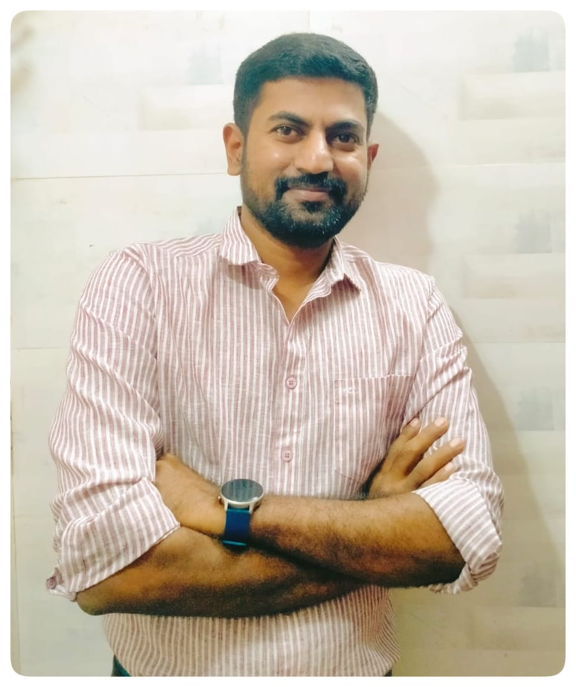

I currently live in Kochi and work at Advanced Millenium Technologies. I grew up in India and previously studied at Calicut University.
Email: dibishks_607@yahoo.co.in.
I'm a Technical Lead with 11 years of experience in software development, specializing in designing and delivering complex AI-based architecture solutions. Passionate about API orchestration, cloud computing, and containerized deployments, I have extensive experience working with modern web and mobile technologies.
Things I'm involved with and areas of interest:
- Backend Development: Node.js, PHP, Python
- Databases: MySQL, MongoDB, PostgreSQL, SQLite
- Frontend & Mobile: AngularJS, Hybrid App Frameworks
- Cloud & DevOps: AWS, Kubernetes, Docker, CI/CD
- Software Architecture: Multi-system landscape, Security, Authorization, Data Provisioning
- Performance Optimization & Troubleshooting
Professional Experience
Technical Lead | Advanced Millennium Technologies Pvt Ltd, Kochi
Mar 2013 - Present
- Leading software development and architectural design for global clients
- Building scalable and secure applications
- Optimizing system performance and resolving complex issues
- Implementing CI/CD pipelines with Kubernetes & Dockerized deployments